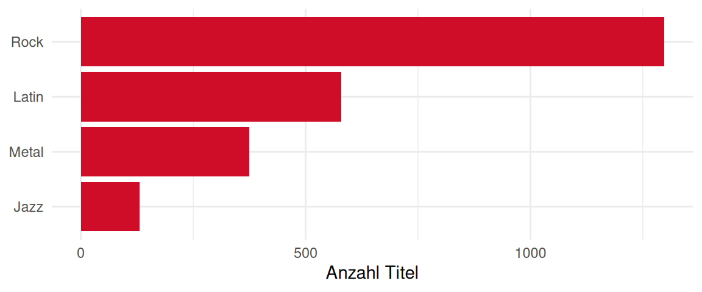

eCH-1234 – Quarto-Dokument als Vorlage
Zusammenfassung
Kurze Zusammenfassung des Zwecks dieses Dokuments
Hinweis
Im vorliegenden Dokument wird bei der Bezeichnung von Personen eine geschlechtsneutrale Formulierung verwendet. Basis bildet der Leitfaden der Bundeskanzlei. Je nach Situation kommen Paarformen (Bürgerinnen und Bürger), geschlechtsabstrakte Formen (versicherte Person), geschlechtsneutrale Formen (Versicherte) oder Umschreibungen ohne Personenbezug zum Einsatz. Das generische Maskulin (Bürger) ist nicht zulässig. Vollformen werden in fortlaufenden Texten verwendet, also in Texten, die aus ausformulierten Sätzen bestehen. In verknappten Textpassagen, namentlich in Tabellen, können Kurzformen verwendet werden. Dabei wird die Kurzform mit Schrägstrich, aber ohne Auslassungsstrich verwendet (Referent/in). Genderstern und ähnliche Schreibweisen werden nicht verwendet.
1 Einleitung
1.1 Status
In Arbeit: Der Gebrauch ist nur innerhalb der Fachgruppe, beziehungsweise im Expertenausschuss zugelassen.
1.2 Geltungsbereich
Die Angaben in diesem Kapitel sollen dem Leser einen raschen Überblick geben, wofür dieser Standard gedacht ist. Hinweise zu folgenden Sachverhalten können dabei hilfreich sein.
1.3 Wir können Untertitel haben
Und etwas Text schreiben.
1.3.1 Auch Unter-Unterüberschriften
Und noch mehr Text schreiben. Vielleicht sogar mit einem schönen Bild.

Bei der Darstellung von Diagrammen sollte versucht werden, diese direkt in Mermaid JS zu erstellen; dies macht zukünftige Änderungen oder Übersetzungen sehr einfach.
1.4 Formatierungen
Dieses Kapitel ist ein Stresstest: Es enthält die gängigen Markdown- und Quarto-Elemente, damit ihre Darstellung in PDF und Website geprüft werden kann.
1.4.1 Textauszeichnungen
Text kann fett, kursiv, unterstrichen, markiert, in Kapitälchen oder durchgestrichen gesetzt werden. Tastenkürzel wie Ctrl-CCtrl-C + Ctrl-VCtrl-V und Inline-Code wie schema:name werden speziell hervorgehoben.1
1 Fussnoten erscheinen auf der Website am rechten Rand, im PDF am Seitenende.
1.4.1.1 Eine Überschrift vierter Stufe
Überschriften bis zur vierten Stufe sind möglich; sie werden nummeriert, erscheinen aber nicht im Inhaltsverzeichnis.2
2 Eine zweite Fussnote mit einem Link auf ech.ch.
1.4.2 Listen und Hinweise
Ungeordnete Liste:
- Erster Punkt
- Zweiter Punkt
- Unterpunkt
- Dritter Punkt
Geordnete Liste:
- Erster Schritt
- Zweiter Schritt
- Dritter Schritt
Hinweis
Ein Hinweis macht auf Zusammenhänge aufmerksam, die leicht übersehen werden.
Warnung
Eine Warnung weist auf Fehlerquellen hin, zum Beispiel auf ungeprüfte Eingabedaten.
1.4.3 Code, Tabellen und Formeln
Der folgende Codeblock zeigt eine SPARQL-Abfrage:
Abbildungen lassen sich auch mit R-Code erzeugen, wie Abbildung 2 zeigt:
| Spalte | Typ | Bemerkung |
|---|---|---|
| Name | Zeichenkette | Pflichtfeld |
| Menge | Dezimalzahl | mit Einheit |
Eine Formel kann im Text stehen, etwa \(E = m c^2\), oder als eigene Gleichung wie Gleichung 1:
\[ \sum_{i=1}^{n} x_i = n \bar{x} \tag{1}\]
2 Hinweise zur Verwendung
Der folgende Absatz ist bewusst Unsinn und dient nur dem Test der Zitierweise: Gemäss dem Genehmigungsleitfaden [eCH-0003 11.1.0] müssen alle Postadressen [eCH-0010 8.1.0] in Turtle [Turtle] serialisiert, als DCAT-Katalog [DCAT; eCH-0200 3.0.1] mit SHACL [SHACL] geprüft und per SPARQL [SPARQL] als Linked Open Data [eCH-0205 1.0] über landwirtschaftliche Kulturen [eCH-0265 1.0.0] in JSON-LD [JSON-LD] und OWL [OWL 2] veröffentlicht werden, wie es das Semantic Web [Berners-Lee 2023] vorsieht.
2.1 Namespaces
Tabelle 2 listet die Präfixe und Namespaces, die in diesem Dokument verwendet werden. Ein Präfix steht stellvertretend für eine Namespace-IRI, den gemeinsamen Anfang der IRIs eines Vokabulars. Die Turtle-Spezifikation beschreibt, wie solche Prefixed Names aufgelöst werden [Turtle].
| Präfix | Namespace |
|---|---|
| : | https://agriculture.ld.admin.ch/eCH-1234/2/ |
| country: | https://ld.admin.ch/country/ |
| rdf: | http://www.w3.org/1999/02/22-rdf-syntax-ns# |
| schema: | http://schema.org/ |
| unit: | http://qudt.org/vocab/unit/ |
| xsd: | http://www.w3.org/2001/XMLSchema# |
3 Datenmodell
3.1 Genre
Eine musikalische Kategorie im Chinook-Datensatz.
3.1.1 Übersicht
- Shape
- :GenreShape
- Zielklasse
- :Genre
- Geschlossen
- Ja (nur die aufgeführten Eigenschaften zulässig)
- Kennzahlen
- 25 Instanzen mit je 5 bis 7 Tripeln (im Mittel 5.4)
- Datenzugriff
- SPARQL-Dienst
3.1.2 Eigenschaften
| Beschreibung | Details | Kardinalität |
|---|---|---|
| Name (schema:name) |
|
1..1 |
| Teil von (schema:partOf) |
|
0..* |
| Alternative Bezeichnung (schema:alternateName): Übersetzte oder umgangssprachliche Bezeichnung des Genres, höchstens eine pro Sprache. |
|
0..* |
3.1.3 Regeln (SPARQL)
3.1.3.1 Keine zyklische Hierarchie
Ein Genre darf weder direkt noch transitiv ein Teil von sich selbst sein.
3.2 Musikalbum
Eine Sammlung von Titeln im Chinook-Datensatz.
3.2.1 Übersicht
- Shape
- :MusicAlbumShape
- Zielklasse
- schema:MusicAlbum
- Geschlossen
- Nein (weitere Eigenschaften zulässig)
- Kennzahlen
- 347 Instanzen mit je 5 Tripeln
- Datenzugriff
- SPARQL-Dienst
3.2.2 Eigenschaften
| Beschreibung | Details | Kardinalität |
|---|---|---|
| Name (schema:name): Jedes Album muss einen Namen haben. |
|
1..1 |
| Künstler (schema:byArtist): Person oder Musikgruppe, die das Album erstellt hat. |
|
0..* |
3.3 Musikaufnahme
Ein einzelner Musiktitel im Chinook-Datensatz.
3.3.1 Übersicht
- Shape
- :TrackShape
- Zielklasse
- schema:MusicRecording
- Geschlossen
- Nein (weitere Eigenschaften zulässig)
- Kennzahlen
- 3503 Instanzen mit je 10 bis 15 Tripeln (im Mittel 11.1)
- Datenzugriff
- SPARQL-Dienst
3.3.2 Eigenschaften
| Beschreibung | Details | Kardinalität |
|---|---|---|
| Name (schema:name): Jeder Titel muss einen Namen haben. |
|
1..1 |
| In Album (schema:inAlbum): Ein Titel kann nur zu einem gültigen schema:MusicAlbum gehören. |
|
0..* |
| Autor (schema:author): Die Person oder Gruppe, die den Titel geschrieben hat. | 0..* | |
| Genre (schema:genre) |
|
1..1 |
| Dauer (schema:duration): Die Dauer muss als schema:QuantitativeValue ausgedrückt werden. |
|
0..* |
| Dateigrösse (schema:contentSize) |
|
0..* |
3.4 Organisation
Ein Unternehmen oder eine Organisation im Chinook-Datensatz.
3.4.1 Übersicht
- Shape
- :OrganisationShape
- Zielklasse
- schema:Organisation
- Geschlossen
- Nein (weitere Eigenschaften zulässig)
- Datenzugriff
- Keiner (Transaktionsdaten, nicht Teil des publizierten Graphen)
3.4.2 Eigenschaften
| Beschreibung | Details | Kardinalität |
|---|---|---|
| Name (schema:name): Jede Organisation muss einen Namen haben. |
|
1..1 |
3.5 Person
Jede Person (Mitarbeiter, Kunde oder benutzerdefinierte Person) im Datensatz.
Personen werden unabhängig von ihrer Rolle einheitlich beschrieben: Angestellte des Musikhandels, Kundinnen und Kunden sowie manuell erfasste Personen teilen dieselben Eigenschaften. Die Rolle ergibt sich aus den Beziehungen, etwa schema:worksFor für Angestellte oder schema:customer auf einer Rechnung für Kundschaft.
Namen werden so erfasst, wie sie die Person selbst verwendet; akademische Titel gehören nicht in den Vornamen. E-Mail-Adressen und Geburtsdaten sind freiwillige Angaben und werden bei Verstössen gegen die Regeln lediglich als Warnung gemeldet.
3.5.1 Übersicht
- Shape
- :PersonShape
- Zielklasse
- schema:Person
- Geschlossen
- Ja (nur die aufgeführten Eigenschaften zulässig)
- Kennzahlen
- 383 Instanzen mit je 5 bis 10 Tripeln (im Mittel 5.6)
- Datenzugriff
- SPARQL-Dienst
3.5.2 Eigenschaften
| Beschreibung | Details | Kardinalität |
|---|---|---|
| Vorname (schema:givenName): Jede Person muss einen Vornamen haben. |
|
1..1 |
| Nachname (schema:familyName): Jede Person muss einen Nachnamen haben. |
|
1..1 |
| E-Mail-Adresse (schema:email): Falls angegeben, muss die E-Mail-Adresse einem Standardformat entsprechen. |
|
0..* |
| Geburtsdatum (schema:birthDate): Eine Person sollte ein gültiges Geburtsdatum haben. |
|
0..* |
| Adresse (schema:address) |
|
0..* |
| Arbeitet für (schema:worksFor): Ein Mitarbeiter kann einer anderen Person unterstellt sein. |
|
0..* |
| Berufsbezeichnung (schema:jobTitle) |
|
0..1 |
| Kennt (schema:knows) |
|
0..* |
3.5.3 Regeln (SPARQL)
3.5.3.1 Keine Selbstunterstellung
Ein Mitarbeiter kann nicht sich selbst unterstellt sein.
3.6 Postadresse
Die Postadresse einer Person.
Adressen folgen dem Aufbau von schema.org und nicht dem Schweizer Adressstandard eCH-0010, da der Datensatz überwiegend ausländische Adressen enthält. Postleitzahlen werden deshalb nur auf ein plausibles Format geprüft, nicht gegen ein Verzeichnis.
3.6.1 Übersicht
- Shape
- :PostalAddressShape
- Zielklasse
- schema:PostalAddress
- Geschlossen
- Ja (nur die aufgeführten Eigenschaften zulässig)
- Kennzahlen
- 67 Instanzen mit je 6 bis 8 Tripeln (im Mittel 7.5)
- Datenzugriff
- SPARQL-Dienst
3.6.2 Eigenschaften
| Beschreibung | Details | Kardinalität |
|---|---|---|
| Strasse und Hausnummer (schema:streetAddress) |
|
1..1 |
| Postleitzahl (schema:postalCode): Buchstaben, Ziffern, Leerzeichen und Bindestriche, zwei bis zehn Zeichen. |
|
0..1 |
| Ort (schema:addressLocality): Jede Adresse braucht genau einen Ort. |
|
1..1 |
| Region (schema:addressRegion): Kanton, Bundesstaat oder Provinz, sofern im Land üblich. |
|
0..1 |
| Land (schema:addressCountry): Land als IRI aus dem Länderverzeichnis des Bundesarchivs auf LINDAS (ISO 3166-1 alpha-3). |
|
1..1 |
3.7 Quantitativer Wert
Ein numerischer Wert mit einer dazugehörigen Einheit.
Quantitative Werte werden nie als blosse Zahl erfasst, sondern immer zusammen mit einer Einheit aus dem QUDT-Vokabular. So bleibt eindeutig, ob eine Dauer in Millisekunden oder eine Dateigrösse in Bytes gemeint ist. Negative Werte sind in diesem Datensatz nicht vorgesehen.
3.7.1 Übersicht
- Shape
- :QuantitativeValueShape
- Zielklasse
- schema:QuantitativeValue
- Geschlossen
- Ja (nur die aufgeführten Eigenschaften zulässig)
- Kennzahlen
- 15401 Instanzen mit je 3 Tripeln
- Datenzugriff
- SPARQL-Dienst
3.7.2 Eigenschaften
| Beschreibung | Details | Kardinalität |
|---|---|---|
| Wert (schema:value): Ein quantitativer Wert muss genau einen numerischen Wert haben. |
|
1..1 |
| Einheitencode (schema:unitCode): Ein quantitativer Wert muss seine Einheit über eine unitCode-URI angeben. |
|
1..1 |
3.8 Rechnung
Ein Kaufbeleg im Chinook-Datensatz. Eine Rechnung fasst die Positionen eines Kaufs zusammen. Der Rechnungsbetrag wird nicht nur als Wert erfasst, sondern auch gegen die Summe der Positionen geprüft; Abweichungen von mehr als fünf Rappen gelten als Fehler. Rechnungen vor dem Jahr 2000 stammen aus einem Altsystem und sind in diesem Datensatz nicht zulässig.
3.8.1 Übersicht
- Shape
- :InvoiceShape
- Zielklasse
- schema:Invoice
- Geschlossen
- Nein (weitere Eigenschaften zulässig)
- Kennzahlen
- 412 Instanzen mit je 8 bis 21 Tripeln (im Mittel 12.4)
- Datenzugriff
- SPARQL-Dienst
3.8.2 Eigenschaften
| Beschreibung | Details | Kardinalität |
|---|---|---|
| Kunde (schema:customer): Eine Rechnung muss genau einem Kunden zugeordnet sein. |
|
1..1 |
| Fälliger Gesamtbetrag (schema:totalPaymentDue): Eine Rechnung muss einen fälligen Gesamtbetrag als schema:QuantitativeValue definieren. |
|
1..1 |
| Enthält (schema:hasPart): Eine Rechnung muss mindestens eine Position (OrderItem) enthalten. |
|
1..* |
| Erstellungsdatum (schema:dateCreated) |
|
0..* |
3.8.3 Regeln (SPARQL)
3.8.3.1 Rechnungsdatum
Eine Rechnung darf nicht vor dem Jahr 2000 datiert sein.
3.8.3.2 Rechnungssumme
Die Rechnungssumme muss exakt mit der Summe ihrer Positionen übereinstimmen (Toleranz 0.05).
SELECT $this
WHERE {
$this schema:totalPaymentDue/schema:value ?invoiceTotal .
{
SELECT $this (SUM(?price * ?qty) AS ?calculatedTotal)
WHERE {
$this schema:hasPart ?line .
?line schema:price/schema:value ?price .
?line schema:orderQuantity/schema:value ?qty .
}
GROUP BY $this
}
FILTER(ABS(?invoiceTotal - ?calculatedTotal) > 0.05)
}4 Datenbezug
Die diesem Dokument zugrundeliegenden Master- und Referenzdaten sind als Linked Data verfügbar.
Die technologische Basis dafür bildet das Resource Description Framework [RDF, RDF], ein zentraler Standard des World Wide Web Consortiums (W3C) zur Modellierung von Datenstrukturen im Web. In RDF werden Informationen nicht in klassischen Tabellen, sondern als vernetzte Graphen abgebildet. Jede Aussage besteht dabei aus einem sogenannten Triple (Subjekt, Prädikat, Objekt). Diese Struktur ermöglicht eine maschinenlesbare, interoperable und systemübergreifend eindeutige Beschreibung von Ressourcen und deren Relationen zueinander.
Für die Speicherung und Publikation dieser RDF-Daten wird LINDAS (Linked Data Service) genutzt, der offizielle Linked-Data-Dienst der Schweizer Bundesverwaltung. LINDAS fungiert als sogenannter Triple Store, einer spezialisierte Graphdatenbank, die für das effiziente Speichern und Abfragen von RDF-Triples optimiert ist und die Daten öffentlich über eine genormte Schnittstelle bereitstellt.
Das folgende Kapitel gibt eine minimale Anleitung, wie die Daten von LINDAS abgefragt und bezogen werden können.
Die zugrundeliegenden Daten selbst werden auf GitHub als Turtle-Files gepflegt.
@base <https://agriculture.ld.admin.ch/eCH-1234/2/> .
@prefix genre: <https://agriculture.ld.admin.ch/eCH-1234/2/genre/> .
@prefix schema: <http://schema.org/> .
genre:1 a <Genre> ;
schema:name "Rock" .
genre:2 a <Genre> ;
schema:name "Jazz" .
genre:3 a <Genre> ;
schema:name "Metal" ;
schema:partOf genre:1 .5 Sicherheitsaspekte
Informationen zu den ausdrücklich massgeblichen rechtlichen Grundlagen oder ein Hinweis darauf, dass bei der Umsetzung die entsprechenden rechtlichen Grundlagen zu beachten sind.
6 Haftungsausschluss
eCH-Standards, die der Verein eCH dem Anwender kostenlos zur Verfügung stellt oder die auf eCH verweisen, haben nur den Status von Empfehlungen. Der Verein eCH haftet in keinem Fall für Entscheidungen oder Massnahmen, die der Anwender auf der Grundlage dieser Dokumente trifft bzw. ergreift. Der Anwender ist dafür verantwortlich, die Dokumente vor ihrer Verwendung selbst zu überprüfen und gegebenenfalls fachlichen Rat einzuholen. eCH-Standards können und sollen die technische, organisatorische oder rechtliche Beratung im Einzelfall nicht ersetzen.
Dokumente, Verfahren, Methoden, Produkte und Standards, auf die in eCH-Standards verwiesen wird, sind möglicherweise durch Marken-, Urheber- oder Patentrechte geschützt. Es liegt in der ausschliesslichen Verantwortung des Anwenders, die erforderlichen Lizenzen von den berechtigten Personen und/oder Organisationen einzuholen.
Obwohl der Verein eCH bei der Erstellung der eCH-Standards mit angemessener Sorgfalt vorgegangen ist, kann er keine Gewährleistung oder Garantie dafür übernehmen, dass die bereitgestellten Informationen und Dokumente aktuell, vollständig, richtig oder fehlerfrei sind. eCH behält sich das Recht vor, die Inhalte der eCH-Standards jederzeit und ohne vorherige Ankündigung zu ändern.
Jede Haftung für Schäden, die durch die Nutzung der eCH-Standards durch den Anwender entstehen, wird im gesetzlich zulässigen Rahmen ausgeschlossen.
7 Urheberrechte
Personen, die eCH-Standards erarbeiten, bleiben Inhaber ihrer geistigen Eigentumsrechte. Diese Personen verpflichten sich jedoch, ihre geistigen Eigentumsrechte oder andere Rechte an geistigen Eigentumsrechten Dritter, soweit möglich, den jeweiligen Fachgruppen und dem Verein eCH kostenlos und zur uneingeschränkten Nutzung und Weiterentwicklung im Rahmen des Vereinszwecks zur Verfügung zu stellen.
Die von den Fachgruppen erarbeiteten Standards dürfen unter Nennung des jeweiligen Autors von eCH kostenlos und in uneingeschränktem Umfang genutzt, verbreitet und weiterentwickelt werden.
eCH-Standards sind vollständig dokumentiert und frei von lizenz- und/oder patentrechtlichen Einschränkungen. Die dazugehörige Dokumentation kann kostenlos angefordert werden. Diese Bestimmungen gelten jedoch nur für die von eCH erarbeiteten Standards, nicht aber für Standards oder Produkte Dritter, die auf eCH-Standards verweisen. Die Standards enthalten die entsprechenden Hinweise auf Rechte Dritter.
Anhang A – Referenzen
[Berners-Lee 2023]
Berners-Lee, Tim ; Hendler, James ; Lassila, Ora: The Semantic Web: A new form of Web content that is meaningful to computers will unleash a revolution of new possibilities. In: Linking the World’s Information: Essays on Tim Berners-Lee’s Invention of the World Wide Web : Association for Computing Machinery, 2023, S. 91–103
[DCAT]
Albertoni, Riccardo ; Browning, David ; Cox, Simon ; Gonzalez Beltran, Alejandra ; Perego, Andrea ; Winstanley, Peter: Data Catalog Vocabulary (DCAT) – Version 3 (W3C Recommendation) : World Wide Web Consortium (W3C), 2024
[eCH-0003 11.1.0]
Verein eCH: eCH-0003 Leitfaden zur Genehmigung von Anträgen (eCH-Standard) : Verein eCH, 2022
[eCH-0010 8.1.0]
Verein eCH: eCH-0010 Datenstandard Postadresse für natürliche Personen, Firmen, Organisationen und Behörden (eCH-Standard) : Verein eCH, 2021
[eCH-0200 3.0.1]
eCH-Fachgruppe Open Government Data: eCH-0200 DCAT-Anwendungsprofil für Datenportale in der Schweiz (DCAT-AP CH) (eCH-Standard) : Verein eCH, 2025
[eCH-0205 1.0]
eCH-Fachgruppe Open Government Data: eCH-0205 Linked Open Data (eCH-Hilfsmittel) : Verein eCH, 2018
[eCH-0265 1.0.0]
eCH-Fachgruppe AgriFood: eCH-0265 Datenstandard Agrardaten – Flächen und Kulturen (eCH-Standard) : Verein eCH, 2024
[JSON-LD]
Sporny, Manu ; Longley, Dave ; Kellogg, Gregg ; Lanthaler, Markus ; Champin, Pierre-Antoine ; Lindström, Niklas: JSON-LD 1.1 – A JSON-based Serialization for Linked Data (W3C Recommendation) : World Wide Web Consortium (W3C), 2020
[OWL 2]
W3C OWL Working Group: OWL 2 Web Ontology Language Document Overview (Second Edition) (W3C Recommendation) : World Wide Web Consortium (W3C), 2012
[RDF]
Cyganiak, Richard ; Wood, David ; Lanthaler, Markus: RDF 1.1 Concepts and Abstract Syntax (W3C Recommendation) : World Wide Web Consortium (W3C), 2014
[SHACL]
Knublauch, Holger ; Kontokostas, Dimitris: Shapes Constraint Language (SHACL) (W3C Recommendation) : World Wide Web Consortium (W3C), 2017
[SKOS]
Miles, Alistair ; Bechhofer, Sean: SKOS Simple Knowledge Organization System Reference (W3C Recommendation) : World Wide Web Consortium (W3C), 2009
[SPARQL]
Harris, Steve ; Seaborne, Andy: SPARQL 1.1 Query Language (W3C Recommendation) : World Wide Web Consortium (W3C), 2013
[Turtle]
Beckett, David ; Berners-Lee, Tim ; Prud’hommeaux, Eric ; Carothers, Gavin: RDF 1.1 Turtle – Terse RDF Triple Language (W3C Recommendation) : World Wide Web Consortium (W3C), 2014
Anhang B – Mitwirkung und Prüfung
| Name | Organisation |
|---|---|
| Damian Oswald | Bundesamt für Landwirtschaft |
| Michael Schüpbach | Bundesamt für Landwirtschaft |
| Lea Stauber | Bundesamt für Landwirtschaft |
Anhang C – Abkürzungen und Glossar
Dieses Glossar ist als SKOS-Glossar [SKOS] auch maschinenlesbar verfügbar, auf LINDAS und im GitHub-Repository.
| Begriff | Beschreibung |
|---|---|
| Graph (Named Graph) | Eine Menge von Tripeln. Ein benannter Graph wird selbst durch eine IRI identifiziert und erlaubt es, Daten in einem Triple Store zu gruppieren. Oberbegriff: Resource Description Framework |
| Inferenz (Reasoning) | Das automatische Ableiten neuer Aussagen aus den vorhandenen Daten und den Axiomen einer Ontologie, zum Beispiel durch den Reasoner HermiT. |
| Internationalized Resource Identifier (IRI) | Weltweit eindeutiger Bezeichner einer Ressource. In RDF werden Subjekte, Prädikate und die meisten Objekte durch IRIs identifiziert. Oberbegriff: Resource Description Framework |
| JSON for Linking Data (JSON-LD) | Eine Serialisierung von RDF auf der Basis von JSON, die sich besonders für Web-Schnittstellen eignet. Oberbegriff: Serialisierung |
| Linked Data (Verknüpfte Daten) | Daten, die nach den Prinzipien des Semantic Web mit IRIs identifiziert, in RDF beschrieben und untereinander verknüpft publiziert werden. Verwandt: Linked Data Service, Resource Description Framework |
| Linked Data Service (LINDAS) | Der offizielle Linked-Data-Dienst der Schweizer Bundesverwaltung, der als Triple Store fungiert. |
| Literal | Ein konkreter Wert in RDF, etwa eine Zeichenkette, eine Zahl oder ein Datum, optional mit Datentyp oder Sprachangabe. Oberbegriff: Resource Description Framework |
| Namensraum (Präfix) | Gemeinsamer Anfang einer Gruppe von IRIs. In Turtle und SPARQL wird ein Namensraum durch ein Präfix abgekürzt, zum Beispiel Verwandt: Internationalized Resource Identifier |
| Ontologie | Ein formales Modell eines Fachgebiets, das Klassen, Eigenschaften und deren logische Beziehungen so beschreibt, dass Maschinen daraus Schlüsse ziehen können. Oberbegriff: Vokabular Verwandt: Web Ontology Language |
| Resource Description Framework (RDF) | Ein zentraler Standard des World Wide Web Consortiums (W3C) zur Modellierung von Datenstrukturen im Web. Informationen werden nicht in klassischen Tabellen, sondern als vernetzte Graphen abgebildet. |
| Serialisierung | Textuelle Darstellung eines RDF-Graphen in einem definierten Format, um ihn zu speichern oder auszutauschen. Unterbegriff: JSON for Linking Data, Terse RDF Triple Language |
| Shape | Eine Menge von Bedingungen, die eine Klasse von Ressourcen oder eine Eigenschaft erfüllen muss, etwa Pflichtfelder, Datentypen und Kardinalitäten. Oberbegriff: Shapes Constraint Language |
| Shapes Constraint Language (SHACL) | Die Sprache des W3C zur Beschreibung und Prüfung der Struktur von RDF-Daten. Das Datenmodell dieses Standards ist in SHACL formuliert. Unterbegriff: Shape |
| Simple Knowledge Organization System (SKOS) | Ein Vokabular des W3C für Thesauri, Klassifikationen und Glossare. Dieses Glossar ist selbst in SKOS erfasst. Verwandt: Vokabular |
| SPARQL Protocol and RDF Query Language (SPARQL) | Die Abfragesprache des W3C für RDF-Daten. Mit SPARQL werden Daten aus Graphen gelesen, verändert und zwischen Systemen ausgetauscht. Verwandt: Resource Description Framework |
| SPARQL-Endpunkt | Eine Web-Schnittstelle, über die SPARQL-Abfragen an einen Triple Store gesendet werden können. Oberbegriff: SPARQL Protocol and RDF Query Language |
| Terse RDF Triple Language (Turtle) | Eine kompakte, gut lesbare Serialisierung für RDF. Alle RDF-Dateien dieses Standards sind in Turtle verfasst. Oberbegriff: Serialisierung |
| Tripel | Die Grundstruktur einer Aussage in RDF, bestehend aus Subjekt, Prädikat und Objekt. Oberbegriff: Resource Description Framework |
| Triple Store (Graphdatenbank) | Eine Datenbank, die auf das Speichern und Abfragen von RDF-Tripeln spezialisiert ist. Verwandt: Linked Data Service |
| Vokabular | Eine Sammlung von Klassen und Eigenschaften mit festgelegter Bedeutung, die zur Beschreibung von Daten wiederverwendet wird, zum Beispiel schema.org. Unterbegriff: Ontologie |
| Web Ontology Language (OWL) | Die Sprache des W3C zur Formulierung von Ontologien. Sie erlaubt es, Klassen und Eigenschaften mit logischen Axiomen zu definieren. Verwandt: Inferenz |
Anhang D – Änderungen gegenüber der Vorversion
Die wichtigsten Änderungen der Version 2.0.0 gegenüber der Vorversion 1.4.6:
- Dokumentvorlage: Die PDF-Ausgabe folgt neu der eCH-Dokumentvorlage (Titelseite mit Metadatentabelle, Kopf- und Fusszeile, Inhaltsverzeichnis, Anhänge); die Website übernimmt denselben Stil in einer hellen und einer dunklen Variante.
- Metadaten: Nummer, Kategorie, Reifegrad, Version, Status und weitere Angaben des Standards werden einmal zentral erfasst und automatisch in alle Sprachversionen, in die Titelseite, in die Fusszeile und in Kapitel 1.1 übernommen.
- Verzeichnisse: Abbildungs- und Tabellenverzeichnis (Anhang E und F) werden automatisch erzeugt und sind mit den Abbildungen und Tabellen verlinkt.
- Darstellung: Einheitliche Gestaltung von Tabellen, Beschriftungen und Code in PDF und Website.
Eine vollständige Liste aller Änderungen je Version findet sich in den Releases auf GitHub.